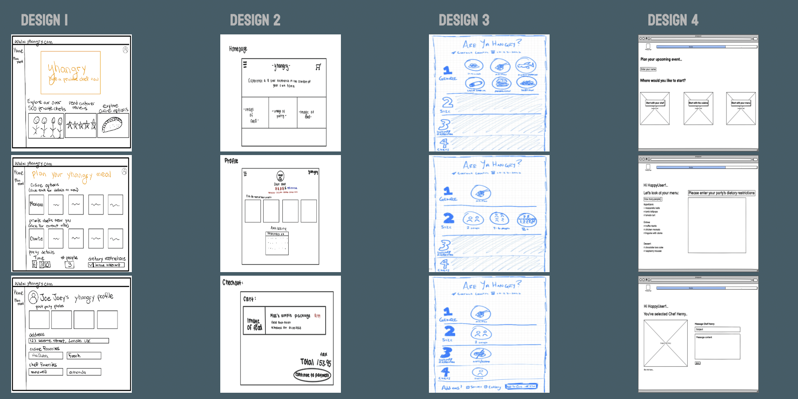
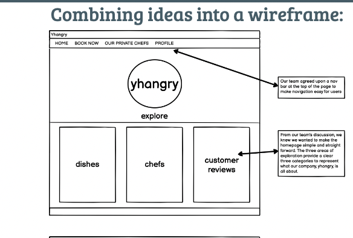

For class, my group and I had to design a interactive figma for a start-up. Our initial attraction
toward yhangry as our start-up was that it had a fun sounding name. Later I learned that yhangry
was a company that you could hire private chefs to come and cook for you which I thought was a super cool idea.
I also love to cook myself, so I am drawn toward anything that has to do with food.
What is this website for?
This website walks through how we built our interactive interface for yhangry.
We wanted to create a website that best conveyed our interpretation of the company's vision.
How was this created?
Sketches:
We started off by creating quick initial sketches on how we wanted to design the yhangry interactive interface.

WireFrame:
We then flushed out our ideas and created a wireframe of what we wanted our interactive interface to look like. A wireframe is
a more in depth layout of our design that shows what we want to show up on our website

Figma:
We then created a Figma based off of our wireframe. A Figma is a mockup of a website, that models what we
want a website to look like without using any code. After our initial design, we got feedback on our Figma and were
able made changes.
User Testing:
After we created the Figma we set up a user testing experiment to see if users
could complete specific tasks we asked them about for our Figma.
Task Asked: First, users should use the arrows on the home page to browse through recent meals cooked through yhangry.
Users should click on the recent meal 'salmon with brussel sprouts.' This should allow them to then read what chef serves that salmon meal.
Next, the user should start their booking process by clicking 'Book Now' in the navbar.
Now on the booking page, users must select Indian as cuisine, a party size of 5 people, Halal meal, and the chef Sammy.
Once all meal details are chosen, the user should then add this meal to their cart.
Next, press confirm. This will take them to a final congratulations page, ending the user test.
Results: Users had difficulty with the first task but were able to easily navigate the other tasks they
were asked to complete.
What I learned
I learned how to take an idea for a company and through what the company does create my own interpretation of what
their website would look like.
I learned how to turn a sketch into a wireframe and then a wireframe into a fully interactable
Figma
I learned the importance of user critiques and user testings. These
show flaws and confusing factors in a website that you might not have thought of before.
Without the initial critique or the user critique we would not have been able to make the improvements
we did, and in the end we had a better product.